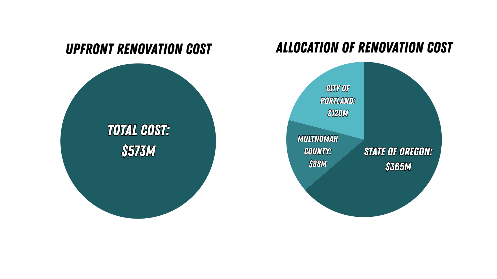
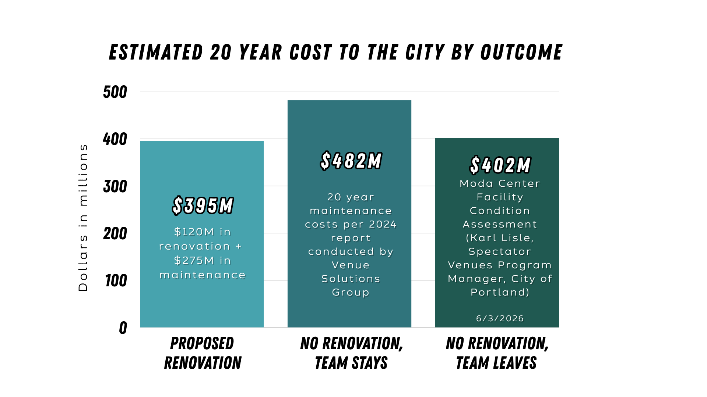

How we arrived at the different funding figures
There are plenty of numbers thrown around about the cost of the renovation, especially when you consider there's the upfront cost to the renovation and also ongoing costs over a 20-year period (maintenance and interest). Because of that, I'm going to start with the most basic number and expand upon it:
The Blazers requested roughly $600M for the renovation. Owner Tom Dundon has been direct about not contributing ownership funds, telling a Portland Metro Chamber audience in June 2026: "It feels like we're making a pretty big investment by staying here and paying these tax rates." To close the gap, the State of Oregon and Multnomah County have both pledged funding of their own.


Portland's proposed costs are lower than they'd otherwise be because of the state's decision to subsidize a large share of the upfront costs, and the state's portion is structured so it doesn't increase taxes.
Of the roughly $586.6M in public funds pledged so far ($365M from the state and $101.6M from the county), the city is being asked to contribute $120M up front. But that's only the first part of the cost. The approved term sheet also commits the city to up to $275M in maintenance on the renovated property over 20 years. That brings the city of Portland's total contribution to $395M over 20 years.
This is how we arrived at the 20-year figure for the city of Portland in the overview.